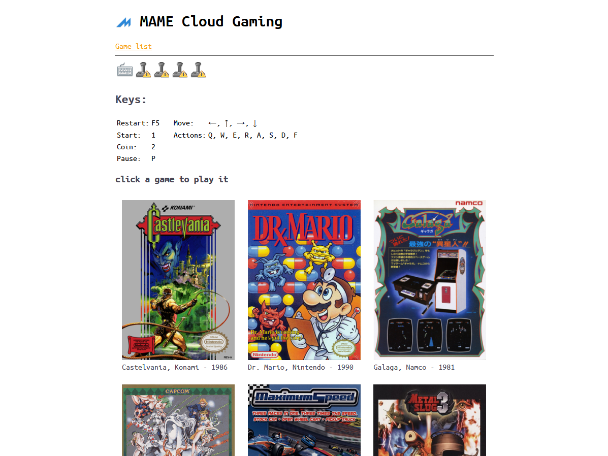
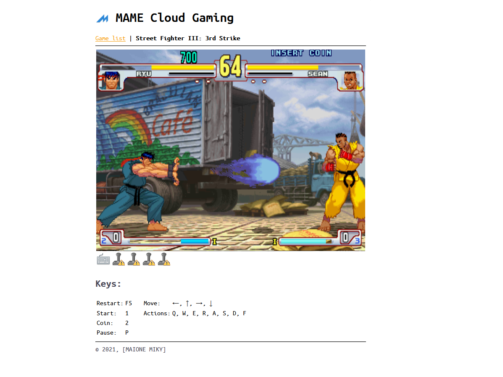

It’s an open-source cloud gaming platform for arcade games based on MAME.
Expanding the MAME project (GNU-GPL license) a game streaming platform was created. The game is stored and executed on the server hardware, ensuring the protection of digital rights (DRM). The client will perform a simple audio-video playback, giving the user the opportunity to start playing immediately without having to download or install anything. This platform will preserve arcade video games from the obsolescence of consoles and at the same time, thanks to the simplicity of access, will attract the new generations to games that have made history.

